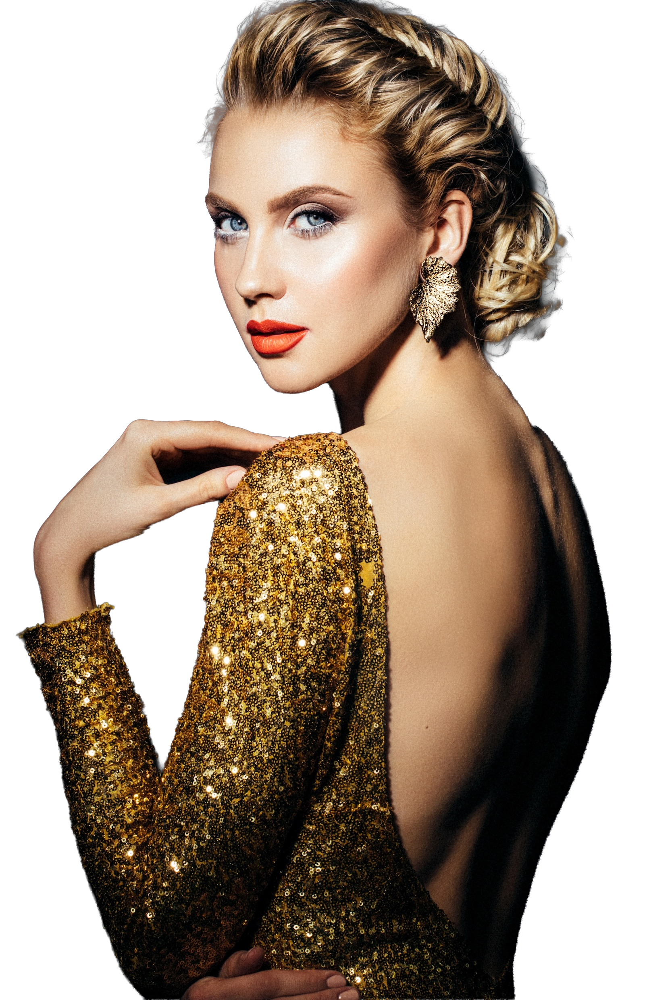

Eternal Light
Gold and jewelry manufacturing is both my profession and a long-standing passion. My approach brings craftsmanship and business strategy together with digital transformation and artificial intelligence, exploring how data can support design decisions, production planning, quality control and a deeper understanding of customers. The aim is to build stronger jewelry businesses while preserving the creativity, precision and human skill that give every piece its character.

Professional Imaginary
Professional gold and jewelry imagery brings craftsmanship into focus, connecting digital branding with the digital transformation of the industry.
Digital Transformation
in gold and jewelry industry
Connecting finished craftsmanship to the digital world helps jewelry brands become more visible and makes it easier for customers to discover their work. A clear business strategy turns product imagery, digital storytelling and advertising into meaningful connections, while organic search and social content can extend reach without paid advertising.
Final Product
Tangible Craftsmanship
Business Strategy
Advertising
Right story, right place